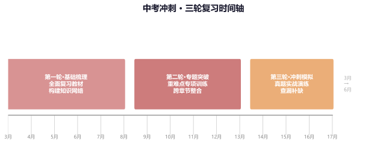
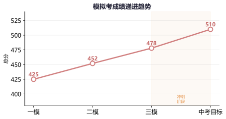
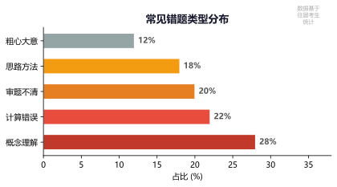
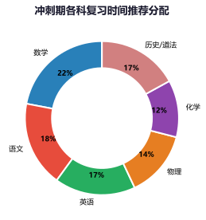
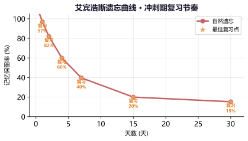
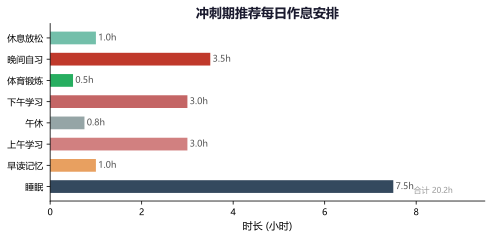
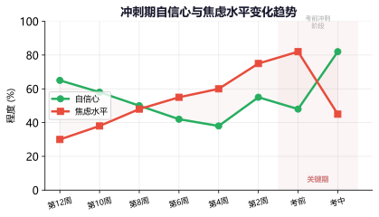
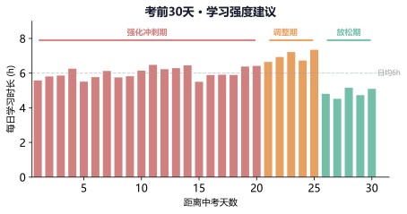
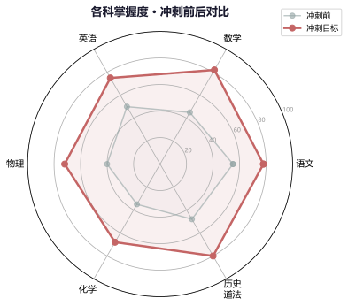

专题一：冲刺阶段整体规划
三轮复习法
冲刺阶段定位：中考前3个月（约3月—6月）是整个备考最关键的时间段。与平时的零散学习不同，冲刺阶段的核心目标是"系统整合、查漏补缺、实战提分"。一个科学的整体规划能让有限的时间发挥最大效益。
第一轮：基础梳理（约5周）：地毯式复习全部知识点，不遗漏任何一个考点。以教材为主线，逐章回顾概念、公式、定理，同时配合基础题训练。目标是"把书读厚"——重新建立完整的知识框架，将零散的知识点串联成体系。
第二轮：专题突破（约4周）：按题型和知识板块进行专项训练，重点攻克中考高频考点和自身薄弱环节。例如数学的压轴题、物理的实验探究题、英语的完形填空等。目标是"把书读薄"——提炼解题模型和套路，形成条件反射式的解题能力。
第三轮：冲刺模拟（约3周）：全真模拟考试节奏，训练综合应试能力。按中考时间安排做整套真题，训练做题节奏、时间分配和心态调节。同时回归基础，查漏补缺。目标是"把状态调到最佳"——以最好状态走进考场。

中考冲刺三轮复习时间轴（3月—6月）
💡 核心原则：三轮复习不是简单的"三轮重复"，而是层层递进的关系——第一轮建体系，第二轮练能力，第三轮调状态。每轮侧重点不同，不要急于求成，也不要在一轮上花费过多时间。
例题1：距离中考还有90天，小明目前数学基础较弱（平时80分/120分），物理中等（45分/70分），语文和英语较好（均110分/120分）。请帮他制定一份三轮复习的学科时间分配方案。
参考方案：
第一轮（第1-5周，基础梳理期）：每天数学1.5h（回归课本，梳理概念+基础题）、物理0.5h（过一遍全部知识点）、语文0.3h（古诗文背诵）、英语0.3h（单词+语法）。
第二轮（第6-9周，专题突破期）：每天数学1h（专攻中档题+易错题）、物理0.5h（实验题+计算题专项）、语文0.5h（阅读+作文训练）、英语0.5h（完型+阅读）。
第三轮（第10-12周，冲刺模拟期）：隔天一套完整模拟卷（按中考时间），剩下的时间回归错题本和基础公式。
关键思路：弱势科目（数学、物理）在第一轮多投入，到第三轮逐渐回归到稳定状态，确保优势科目不滑坡的同时拉升短板。
例题2：下列哪项不是冲刺第一轮的核心任务？（ ）
A．完成所有知识点的系统梳理
B．大量做整套中考真题
C．建立各科知识框架图
D．解决基础知识的盲区和漏洞
解析：
A✓：第一轮的目标就是地毯式复习，不遗漏知识点。
B✗：大量做整套真题是第三轮的任务。第一轮应以教材和分专题训练为主。
C✓：构建知识框架，形成知识体系是第一轮的关键产出。
D✓：发现并解决知识盲区是第一轮的核心价值。
答案：B
练习1：离中考还有12周，请用表格形式列出你自己的三轮复习时间计划（含各科各轮重点）。
提示：参考例题1的方案，结合自身实际情况调整各科在各轮的投入比例。
练习2：判断正误：冲刺阶段的"回归基础"意味着只做简单题，不做难题。
答案：错误。"回归基础"指回归教材和基础知识体系，但在练习中应保持适当难度，确保中档题不失分、压轴题能拿步骤分。
专题二：真题训练方法论
刷题策略
真题的独特价值：中考真题是唯一真正反映命题思路、考查方式和难度分布的材料。与模拟题不同，真题经过了命题专家的反复打磨，其考点分布、设问角度、评分标准都具有最直接的参考价值。做3套真题比做10套模拟题更有效。
真题训练的"三遍法"：
第一遍（限时模拟）：完全按中考时间和要求完成，给自己评分。重点感受做题节奏和时间压力。
第二遍（深度分析）：逐题分析——做对的题能不能更快？做错的题为什么错？（知识漏洞/审题不清/计算失误）拿不准的题蒙对了还是真会了？
第三遍（归纳总结）：跳出单题，横向比较——这套卷子的考点分布如何？哪种题型反复出现？哪些问法有新意？将规律总结到笔记本上。

模拟考成绩递进趋势——通过系统训练实现稳步提升
真题选用原则：优先做本省近5年的中考真题（尤其是近3年），然后做教育发达省份（如北京、上海、江苏）的真题作为拓展。做真题的顺序：按年份从旧到新（最近的留到冲刺后期做）。每套真题做完后，花至少1.5倍于做题时间的时间来分析总结。
| 真题训练阶段 | 频率 | 目的 | 分析重点 |
|---|
| 第一轮后期 | 每周1套 | 熟悉题型与难度 | 考点分布、知识盲区 |
| 第二轮 | 每周2套 | 训练解题能力 | 解题速度、方法优化 |
| 第三轮 | 隔天1套 | 全真模拟冲刺 | 时间分配、考场心态 |
例题1：数学真题卷最后一道压轴题你做对了，但花了40分钟（考试建议时间25分钟）。请分析这个情况并给出改进方案。
分析：
这是一个典型的时间分配问题。"做得对但太慢"说明解题思路没有问题，但方法效率有待提升。
改进方案：
(1) 总结压轴题的常见题型（二次函数综合、几何动态问题等），为每种题型整理标准解题流程。
(2) 平时练习时给压轴题设定时限（25分钟），倒逼自己提高思维速度和计算效率。
(3) 学会"战略性放弃"：如果5分钟内没有思路，先跳过做完其他题再回来看。
(4) 考场上压轴题的前1-2小问通常比较基础，确保拿到基础分，最后一问量力而行。
例题2：小张做完一套英语真题后，发现完形填空错了6个（总共10个）。他应该怎么做深度分析？
分析步骤：
第一步，将6个错题分类——是词汇不认识（2个）、语法结构没看懂（2个）、上下文逻辑理解错误（1个）、还是粗心（1个）。
第二步，针对每类问题制定改进措施——词汇问题整理到生词本每天复习；语法问题回顾相关语法点；逻辑问题训练"先通读再填空"的方法。
第三步，归纳完形填空常见考点（连词、代词、动词时态、固定搭配等），看自己是哪些考点反复出错。
关键方法：不是改完对答案就结束了，真题的最大价值在于错题分析。
练习1：找一套你最近做过的真题，用"三遍法"重新分析一遍，记录每道题的分析结果。
建议准备一个"真题分析本"，每套真题一页，记录：各题得分/失分、失分原因、对应知识点、改进措施。
练习2：为什么说近3年的真题比10年前的真题价值更大？至少说出3个原因。
原因：①命题思路和课标要求不断更新；②题型和考查方式在不断演变；③难度分布和评分标准有所调整；④旧真题中可能包含已删除的考点。
专题三：错题管理与深度复盘
错题整理 · 精准提分
错题是提分的最大宝藏：中考冲刺阶段，与其花时间做大量新题，不如把精力投入到错题的深度复盘上。数据表明，80%的中考失分来自于反复犯同样的错误。如果能消灭错题本上的每一道题，提分效果立竿见影。
错题的四级分类法：
一级（知识型错误）：概念不清、公式记错、知识点遗漏 → 回归教材，重新学习该知识点。
二级（方法型错误）：思路不对、方法不当、模型不会用 → 积累解题模型，建立条件反射。
三级（习惯型错误）：审题不细、计算粗心、步骤不规范 → 训练审题技巧，强制规范答题。
四级（心态型错误）：时间不够慌乱、紧张看错、心态崩盘 → 模拟考场压力训练，培养应试节奏。

常见错题类型分布——明确主攻方向，精准提分
例题1：小王的物理错题本有道关于浮力计算的题，他第一次做时用了阿基米德原理但计算出错。请按四级分类法分析并提供改进方案。
分析：
首先判断错误类型：如果小王是因为浮力公式记错了，属于一级（知识型）；如果是知道公式但不知道这道题该用阿基米德原理还是平衡法，属于二级（方法型）；如果是公式用对了但计算过程出错（如单位未统一），属于三级（习惯型）。
改进方案：
(1) 针对知识型：重写浮力相关公式卡片（F浮=ρ液gV排、F浮=G-F拉、漂浮/悬浮F浮=G），贴在错题本首页。
(2) 针对方法型：总结"浮力题的解题三步法"——判断状态→选择公式→代入数据。找同类型题集中训练5道。
(3) 针对习惯型：训练"计算四步检查"——写公式→代数据→算结果→检查单位。
例题2：下面关于错题管理的说法，哪个最准确？（ ）
A．错题只要抄一遍就能记住
B．错题本应该只收录不会的难题
C．错题管理的核心是分析错误原因并针对性解决
D．考前看看错题本就可以了，不用重新做
解析：
A✗：抄写只能加深印象，但不能从根本上解决问题。关键是要分析错误原因。
B✗：不仅收集不会的题，粗心错的题更有价值，因为它反映了习惯问题。
C✓：错题管理的三个环节——记录→分析→改进——分析是最关键的一步。
D✗：看和做是两回事。必须要重新动手做一遍，确保真会了（"输出式复习"）。
答案：C
练习1：翻看你的最近一次月考/模拟考试卷，将所有错题按四级分类法归类，统计每种类型的数量和失分，确定你最需要改进的错误类型。
建议用Excel或表格记录：题号→知识点→失分→错误类型→改进方案。
练习2：你之前整理过的一道错题，现在重做一遍。如果还做错，请分析为什么第二次还错了，并用红笔在错题旁边标注新的分析。
第二次做错提示：要么是第一次分析不够深入，要么是同类题训练量不够，要么是知识点根本没掌握。
专题四：各科冲刺策略
语文 · 数学 · 英语 · 物理 · 化学 · 历史/道法
语文冲刺策略：古诗文默写必须拿满分（每天10分钟滚动背诵），现代文阅读训练"审题→定位→组织语言"三步法，作文准备5-8个万能素材（涵盖成长、奋斗、亲情、文化等主题），积累高级词汇和句式但不背整篇范文。
数学冲刺策略：选择题和填空题确保不失分（限时训练+检验技巧），中档题（17-24题）按题型专项训练形成解题模式，压轴题（25-26题）掌握常见模型并训练"多拿步骤分"的意识。每天保持一定量的计算训练，避免计算失误。
英语冲刺策略：听力坚持每天听15分钟（模拟题+英文广播），完形填空训练上下文逻辑推理能力，阅读理解重点突破主旨大意题和推理判断题，书面表达准备5个高级句式模板+3类应用文格式。单词坚持背到考前最后一天。
物理冲刺策略：实验题是得分重点（熟记教材实验+实验探究的一般方法），计算题规范训练（写公式→代数据→算结果→答）。力学和电学是两大重点板块，各占30%左右分值。注意物理量单位换算和有效数字。
化学冲刺策略：化学方程式必须全部熟练（按反应类型分类记忆），实验题重点关注气体制取和性质检验。推断题找"题眼"（特征反应、特殊颜色等）。计算题步骤规范，注意相对分子质量计算的准确性。
历史/道德与法治冲刺策略：构建时间轴/专题框架，关注"周年热点"（当年重大事件的整十周年），训练"材料题"的答题模板（从材料中提取信息→联系教材知识→组织语言作答）。

冲刺期各科复习时间推荐分配——根据自身情况灵活调整
| 科目 | 第一轮重点 | 第二轮重点 | 第三轮重点 | 考前一周 |
|---|
| 语文 | 古诗文+基础 | 阅读+作文 | 模拟卷+素材 | 默写+作文框架 |
| 数学 | 概念+基础题 | 中档题+压轴模型 | 套卷+易错回顾 | 公式+错题 |
| 英语 | 单词+语法 | 题型专项 | 套卷+作文批改 | 听力+单词 |
| 物理 | 概念+公式 | 实验+计算专项 | 套卷+模型回顾 | 公式+实验 |
| 化学 | 方程式+概念 | 实验+推断专项 | 套卷+方程式 | 方程式+错题 |
| 历史/道法 | 框架+时间轴 | 热点+材料题 | 模拟+答题模板 | 时间轴+热点 |
例题1：数学目前100/120分，想冲刺115+，最后的15分应该从哪里突破？
分析：
100→115分的核心不是攻克所有压轴题，而是"减少失分+稳定中档题+突破压轴第一问"。
具体策略：
(1) 计算专项：每天5道计算题（含代数计算、方程求解），做到100%正确率，挽回3-5分。
(2) 几何证明规范：训练几何证明的格式和逻辑严谨性，减少无谓扣分，挽回2-3分。
(3) 中档题提速：24-25题限时训练，确保15分钟内高标准完成，节省时间给压轴题。
(4) 压轴题：第一问确保拿下（通常较简单），第二问训练常见辅助线/解题模型，第三问量力而行，写出关键步骤拿步骤分。
核心思路：从100到115，主要靠"少丢分"而非"做难题"。
例题2：距离中考还有30天，英语作文还经常偏题或跑题，怎么快速提升？
解决方案：
(1) 训练"三审法"：一审主题（写什么）、二审要求（写几个要点、字数多少）、三审时态（一般现在/一般过去/其他）。
(2) 背3个万能开头模板、3个过渡模板、3个结尾模板，确保无论什么题目都能套用。
(3) 写之前先列提纲（5分钟）：开头(1句)→要点1(2-3句)→要点2(2-3句)→结尾(1-2句)。
(4) 每周精写2篇作文，找老师或AI批改，重点看"是否扣题"和"语言表达"两方面。
提示：中考作文评分中，扣题是第一标准。语言优美但偏题的作文得分反而不如简单但扣题的作文。
练习1：评估你各科目前的水平和目标分数，计算每科的"提升空间"，按"投入产出比"排序，确定冲刺期的优先提分科目。
提示：投入产出比 = (目标分-目前分) ÷ 需要投入的时间。优先做投入产出比高的科目。
练习2：针对你最弱的科目，按上面的各科策略制定一个为期2周的专项提升计划。
计划应包含：每日任务、每周目标、检测方式（如完成一套真题并分析）。
专题五：高效记忆方法
科学记忆 · 背诵策略
艾宾浩斯遗忘曲线与复习策略：人脑对信息的遗忘率在学习后是最高的——20分钟后遗忘42%，1小时后遗忘56%，1天后遗忘74%。但只要在关键时间点进行复习，记忆保留率可以显著提升。冲刺期必须利用这一规律科学安排背诵和复习节奏。

艾宾浩斯遗忘曲线——在关键时间点复习，效率翻倍
冲刺期高效记忆法：
① 黄金记忆时间：早上刚醒来（前摄抑制少）和睡前（后摄抑制少）是最佳记忆时间段。早上用于背诵新内容，睡前回顾当天所学。
② 输出式记忆：光看和读不够，必须合上书复述一遍，或者默写下来。"输出"是最强的记忆方式。
③ 分散记忆优于集中记忆：同样的内容，分散在3天每天30分钟记忆效果好于集中1天90分钟。
④ 联想记忆法：将新知识与已有知识建立联系（类比、对比、串联成故事），形成更牢固的记忆网络。
⑤ 间隔重复：每次复习都在遗忘曲线上的关键节点进行——1小时后、1天后、3天后、7天后、30天后。
例题1：你有30个英语单词需要掌握，离考试还有30天。请设计一个科学的背诵计划。
参考方案：
| 天数 | 新词 | 复习内容 |
|---|
| 第1天 | 1-10 | — |
| 第2天 | 11-20 | 1-10（5分钟快速过） |
| 第3天 | 21-30 | 11-20（5分钟）+ 1-10（3分钟快速过） |
| 第4天 | — | 21-30（5分钟）+ 11-20（3分钟）+ 1-10（看错词） |
| 第7天 | — | 全部30词快速回顾（10分钟） |
| 第14天 | — | 全部30词回顾（重点看还记不住的） |
| 第30天（考前） | — | 快速过一遍 |
关键：每次复习的时间比前一次短，但间隔越来越长。这就是"间隔重复"的核心原理。
例题2：为什么复习时"合上书复述"比"反复看"记忆效果好？
解析：
这与"测试效应"（Test Effect）有关。当你看书时，大脑处于被动输入状态，记忆痕迹较浅。但当你要复述时，大脑必须主动检索和提取信息——这个"检索过程"本身就会强化神经连接，加深记忆。
研究表明，同样学习一段内容，花30%时间阅读+70%时间自我测试的组，比花100%时间阅读的组，长期记忆效果高出50%以上。
行动建议：下次复习时，先看一遍→合上书→在脑中或纸上复述→打开书检查→重点看遗漏处。这比反复看3遍高效得多。
练习1：选一首你正在背的古诗或一段需要背诵的内容，用"输出记忆法"操作一遍（先读2遍→合上书复述→打开检查→重点记遗漏处），记录效果。
比较一下用这种方法比平时背诵效率如何。
练习2：将化学元素周期表前20号元素编成一个故事或顺口溜，用联想记忆法来记忆。
例："氢氦锂铍硼"→"亲爱李萍鹏"……只要能帮助你记住，任何联想方法都可以。
专题六：冲刺期时间管理
作息规划 · 效率提升
冲刺期的时间哲学：不是"拼谁睡得少"，而是"拼谁效率高"。每天有效学习时间7-8小时已经足够，关键是这7-8小时里是真正的专注学习还是"假努力"。研究表明，每天睡眠不足6小时的学生，记忆力和思维能力下降30%以上——得不偿失。
番茄工作法在冲刺期中的应用：以45分钟为一个学习单元（25分钟专注学习+5分钟休息的"番茄钟"在实际中可调整为40+10或45+5，根据个人习惯），每4个单元后安排一次15-20分钟的较长休息。这种节奏既能保持专注力，又能避免过度疲劳。

冲刺期推荐每日作息安排——劳逸结合，可持续运转
高效学习的"三区理论"：
舒适区（已经掌握的内容）→ 成长区（踮踮脚能够到的内容）→ 恐慌区（超出能力太多）。高效学习的关键在于始终待在"成长区"——既不太难（容易放弃），也不太简单（浪费时间）。冲刺期的时间应主要分配给成长区的学习内容。
例题1：小明每天学习10小时但成绩提升不明显，而小张每天学习7小时成绩却在稳步提升。可能的原因是什么？
分析：
学习效果 ≠ 学习时间 × 学习效率。可能的原因：
(1) 小明虽然学了10小时，但有效专注时间可能只有5-6小时（中间频繁看手机、发呆、拖延）。
(2) 小明可能没有科学的时间结构——长时间做同一科目，大脑疲劳效率下降。
(3) 小张虽然只学7小时，但学习时高度专注（使用番茄钟），并且会交叉安排不同科目，保持大脑活跃。
(4) 小张可能更注重"休息质量"——好的休息让学习时精力更充沛。
结论：不要比时长，要比效率。建议小明记录一周的时间使用情况，找到"时间黑洞"。
例题2：周末有8小时复习时间，数学、物理、语文各需复习。请设计一个科学的时间安排方案。
参考方案：
| 时段 | 内容 | 说明 |
|---|
| 8:00-8:30 | 晨读（语文古诗文） | 利用黄金记忆时间 |
| 8:40-10:10 | 数学（中档题训练） | 上午头脑清醒，适合理科 |
| 10:10-10:30 | 休息+远眺 | 放松眼睛和大脑 |
| 10:30-12:00 | 物理（实验板块） | 承上继续理科思维 |
| 12:00-14:00 | 午餐+午休 | 午休30分钟养精蓄锐 |
| 14:00-15:30 | 语文（现代文阅读） | 下午适合文科类内容 |
| 15:30-15:50 | 休息+运动 | 做几个拉伸动作 |
| 15:50-17:00 | 综合（英语完型+阅读） | 穿插不同科目 |
| 17:00-18:00 | 当日复习总结 | 回顾当天所有内容 |
设计原则：文理交替、难易搭配、每90分钟换一次科目、保证午休和活动时间。
练习1：用时间日志法记录你过去一周每天的时间使用情况（精确到30分钟），找出你的"时间黑洞"和"高效时段"。
时间黑洞示例：早上赖床30分钟→刷手机15分钟→找资料10分钟……每天这些小时间加起来可能超过2小时。
练习2：根据你自己的高效时段，设计一份适合你的每日作息表（参考例题2的格式）。
记住：适合别人的时间表不一定适合你，关键是找到你自己的节奏。
专题七：心理调适与状态管理
考前心态 · 焦虑管理
认识考前焦虑：考前适度焦虑是正常且有益的——它让你保持警觉和动力。但过度焦虑（失眠、注意力无法集中、明明会做的题考试时做不出来）就需要主动干预。研究显示，考试时的表现与焦虑水平呈倒U形关系（耶克斯-多德森定律）：中等焦虑水平表现最佳。

冲刺期自信心与焦虑水平的动态变化——考前两周是"最艰难时刻"
缓解焦虑的实用方法：
① 呼吸放松法：4-7-8呼吸法——吸气4秒，屏住7秒，呼气8秒，重复5次。可快速降低心率，缓解紧张。
② 积极自我暗示：用"我已经准备好了""我付出了足够的努力"代替"我肯定考不好""时间不够了"。
③ 运动释放法：每天15-20分钟中等强度运动（跑步、跳绳、打球）能有效降低压力激素水平。
④ 分心法：当焦虑感来袭时，做一件与学习无关的事（整理书桌、听一首歌、画几笔），打断焦虑循环。
例题1：距离中考还有两周，小李发现自己越是到考前越学不进去，一打开书就烦躁，晚上失眠多梦。这是正常吗？应该怎么办？
分析：
这是典型的"考前高原反应"——大脑因为长时间高强度学习进入了保护性抑制状态。非常正常！几乎所有考生在考前1-2周都会经历。
应对措施：
(1) 降低强度：从"拼时间"切换到"保状态"模式，每天学习时间减少到5-6小时。
(2) 转变内容：不做新题、不攻难题，以回顾错题本、看公式/笔记为主。
(3) 调整作息：严格按照中考时间安排学习（上午考语文就上午看语文），让大脑适应考试节律。
(4) 保证睡眠：晚上10:30前上床，中午午休30分钟。睡不着也躺着闭目养神。
(5) 适度运动：每天下午运动30分钟出出汗，有助于晚上入睡。
关键认知：考前觉得"什么都不会"是一种错觉，考场上题一拿到手自然就会了。相信自己之前的积累。
例题2：数学考试中遇到一道没见过的题型，小赵慌了，手心出汗，大脑一片空白。他应该怎么做？
考场应急策略：
(1) 立即停笔，闭上眼睛，做3次4-7-8深呼吸（10秒内完成）。
(2) 对自己说："我不会的别人也不会，这道题做不出来的大家都不容易。"
(3) 先标记此题，跳过去做后面的题。做完后面的题后，心态平静下来再回来看。
(4) 回来时先看题目问了什么（明确目标），再逐句分析题干条件，把已知条件写出来。
(5) 回想类似题型的解题套路，如果实在不会，把相关的公式和步骤写上去（拿步骤分）。
重要原则：考试中遇到卡壳是常态，关键是不让一道题影响整场考试的心态。学会"战略性跳过"是中考必备技能。
练习1：写下你的"考前焦虑清单"——具体列出你在害怕什么（例如：考到某类题、时间不够、作文跑题等），然后逐条写出"最坏情况"和"应对预案"。
很多时候，把焦虑写下来就会发现它并不可怕。对每个"最坏情况"有预案，能极大降低焦虑感。
练习2：每天睡前花5分钟做"积极回顾"——写下今天做得好的3件事（可以是学习上的，也可以是生活上的）。坚持一周，记录感受。
积极心理学研究表明，持续关注积极面可以显著提升幸福感和自信心，对考试也有帮助。
专题八：考前一周与考场发挥
最后冲刺 · 考试技巧
考前一周的"保温"策略：考前7天不是冲刺学习的黄金期，而是"状态调整期"。这个阶段的目标不是"多学新东西"，而是"保持手感、调好状态、做好准备"。每天学习控制在5小时左右，以回顾和轻度练习为主。

考前30天学习强度建议——最后一周适度放松，保持最佳状态
考前准备清单：
① 考场踩点：提前一天去考场熟悉路线和环境，计算好路上时间。
② 物品准备：准考证、身份证、2B铅笔（削好或自动的）、黑色签字笔（2-3支）、橡皮、尺规、手表、透明文具袋、纸巾、水。
③ 作息调整：考前3天开始严格按照中考时间调整作息——早上6:30起床，晚上10:30前睡觉。
④ 饮食注意：不吃生冷、辛辣、油腻的食物，保持清淡饮食。考前不要突然改变饮食习惯。

冲刺前后各科掌握度对比——目标明确，全面提升
考场时间分配黄金法则：
① 先易后难：拿到试卷先浏览全卷，按"会做的→有把握的→有挑战的"顺序答题。
② 时间预算：根据各题分值估算时间预算，某道题超过预算时间2倍还没有思路，果断标记跳过。
③ 不留空白：即使不会做也要把相关公式、思路写上去，中考按步骤给分。
④ 检查策略：做完后先检查选择题的填涂是否正确，再检查计算题的数字和单位，最后检查主观题的审题是否准确。
例题1：中考数学试卷共26题，考试时间120分钟。请设计一个时间分配方案。
参考方案：
| 题型 | 题号 | 建议时间 | 策略 |
|---|
| 选择题 | 1-12 | 20分钟 | 前8题快速（10分钟），后4题稍慢 |
| 填空题 | 13-18 | 15分钟 | 注意单位、取值范围 |
| 解答题（基础） | 19-22 | 30分钟 | 规范书写，不跳步骤 |
| 解答题（中档） | 23-24 | 20分钟 | 认真审题，列式清晰 |
| 解答题（压轴） | 25-26 | 25分钟 | 先做第一问，第二问尽力，第三问写步骤 |
| 检查 | — | 10分钟 | 先查填涂，再查计算 |
提示：这是参考方案。建议在平时模拟考中调整找到最适合自己的节奏。原则是"基础题不赶、中档题不拖、压轴题不恋战"。
例题2：英语考试中，阅读理解有一道题你完全看不懂（涉及不熟悉的主题），怎么办？
应对策略：
(1) 先读题干和选项，带着问题回文章找答案（不要试图读懂全文再做题）。
(2) 根据"关键词定位法"：在文章中找题干中的关键词（人名、地名、数字、专有名词等），答案通常就在关键词前后。
(3) 排除法：先排除明显错误的选项（绝对化语言、与文章明显不符、无中生有的内容），剩下的就是最可能的答案。
(4) 如果完全无法确定，相信第一感觉。研究表明，第一感觉的正确率高于改答案。
(5) 这道题如果花了超过预定时间，先标记，做完其他题后再回来看。
重要提醒：英语阅读出题顺序通常和文章顺序一致。找不到答案时，可以先做下一道题，再回来定位。
练习1：在接下来的模拟考中，每次考试前先花2分钟做"时间预算"（各题型计划用时），考试后花2分钟复盘实际用时与计划的偏差，调整下次考试的时间方案。
找到最适合自己的时间分配方案，是考场稳定发挥的关键。
练习2：请列出你的"考前72小时行动计划"——精确到每半天的任务安排和准备事项。
包含：考点踩点、物品准备、作息调整、饮食安排、以及"最坏情况应急预案"。提前想好每个细节，考前不慌。